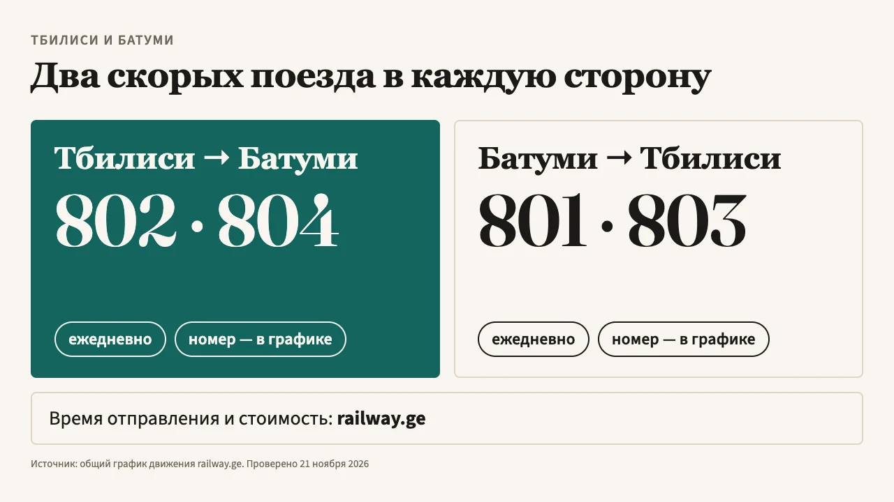
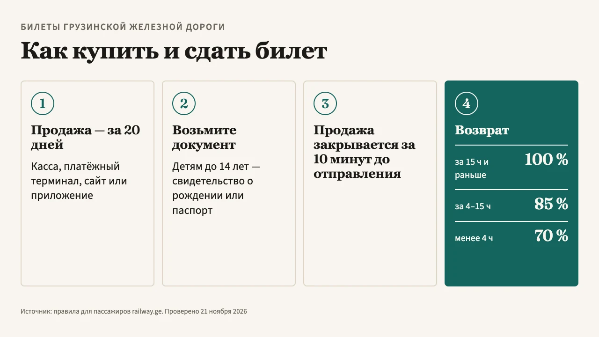
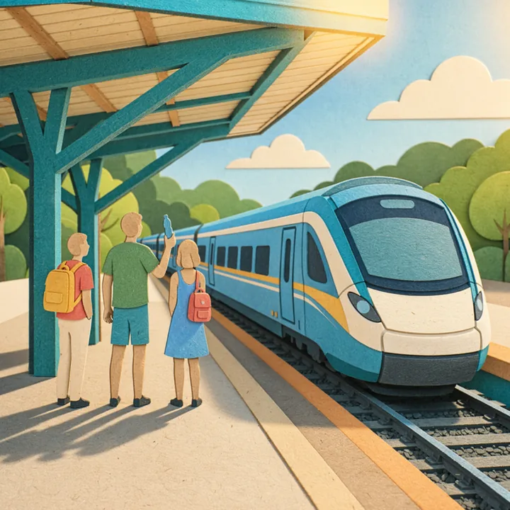
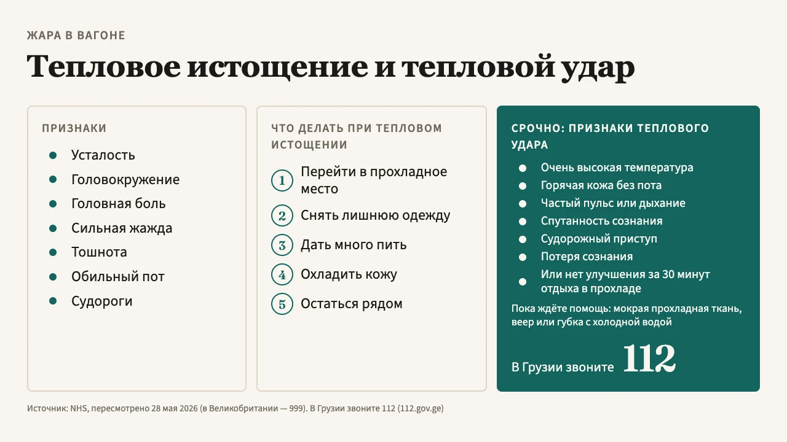
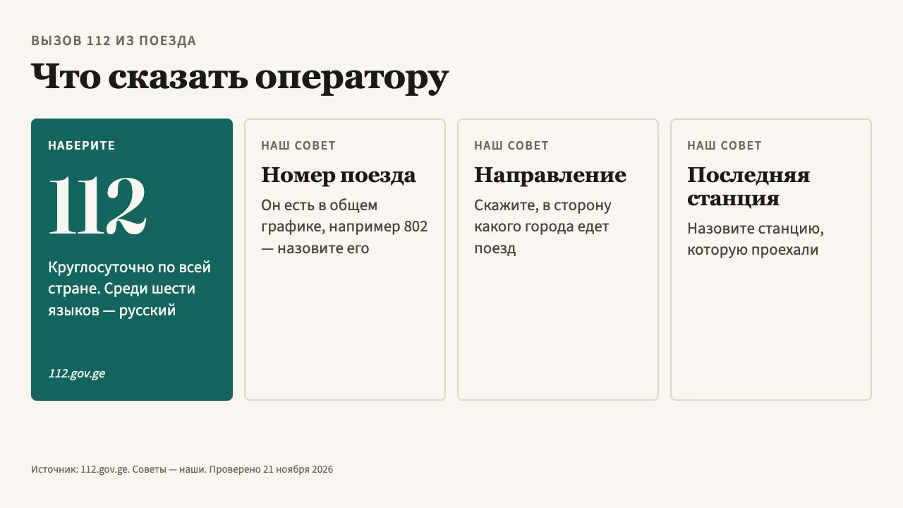

- Скорых до Батуми
- 2 в сутки
- Продажа мест
- за 20 дней
- Конец продажи
- за 10 минут
- Поезд в Ереван
- через день
- Горячая линия ЖД
- 1331
- Скорая и полиция
- 112
Проверено 21 ноября 2026 года.
Статья входит в «Путеводитель по Грузии».

Поезд из Тбилиси в Батуми и обратно
Поезд Тбилиси — Батуми ходит каждый день: в общем графике движения railway.ge два скорых — № 802 и № 804. Обратный поезд Батуми — Тбилиси — № 801 и № 803.
Расписание поездов до Батуми: два в день, время — на railway.ge
Время отправления и прибытия меняется, поэтому мы его не приводим: сверяйте график в день покупки.
Наш совет: откройте график ещё раз накануне поездки. Номер состава пригодится и при звонке в экстренную службу — что сказать диспетчеру.

Скоростной поезд Тбилиси — Батуми: что известно о составе
У обоих скорых в графике указан тип Stadler-kiss. Официального описания вагонов и удобств мы не нашли и ничего о них не обещаем.
Правительство Канады пишет, что состояние и чистота поездов «сильно различаются от маршрута к маршруту».
Как добраться из Тбилиси в Батуми: поезд, автобус или маршрутка
Поездом — два скорых в день; официального расписания маршруток и автобусов мы не нашли. Самолёт и другие способы — в статье «Батуми», о маршрутках — в статье «Маршрутки в Грузии».
Наш совет: с детьми и с теми, кого укачивает, удобнее вагон: можно встать и пройтись.
Где и как купить билет на поезд в Грузии
Билеты на поезд Тбилиси — Батуми и на другие внутренние рейсы продаёт railway.ge: в кассах, платёжных боксах, онлайн через раздел Internet ticket и в мобильном приложении. Продажа открывается за 20 дней до отправления, а через систему прекращается за 10 минут до него.
Цены меняются — смотрите их при покупке. Наш совет: приобретайте места у самой компании или в кассе на станции.
20 или 40 дней: у двух перевозчиков разные правила. У Georgian Railway на открытых страницах — 20 дней, без отдельного срока для международных рейсов. 40 дней — правило армянской компании South Caucasus Railways для международных поездов на её сайте railway.am; обратное направление там перестают продавать за 10 дней. Документ 2024 года; действует ли он сейчас, мы не проверили.
Документы. При оформлении сайт просит личный номер, для детей до 14 лет — свидетельство о рождении или паспорт. В вагон пускают по билету и удостоверению личности.
Что указывать иностранцу без местного личного номера, на открытых страницах не сказано. Наш совет: быстрее всего уточнить это в кассе или по горячей линии — 1331 или +995 32 2199010.

Как вернуть билет и что положено при опоздании поезда
Полную стоимость вернут, если сдать место не позже чем за 15 часов до отправления. За 4–15 часов — 85 %, меньше чем за 4 часа — 70 %. Сдать место может только тот, на кого оно оформлено, с документом.
- Состав опоздал. При задержке 60–119 минут положена компенсация не меньше 25 % стоимости, от 120 минут — не меньше 50 %.
- С ребёнком. До 5 лет — бесплатно без отдельного места, с 5 до 10 лет — детский тариф, с 10 лет — как взрослые.
- С собакой или кошкой. Правила говорят о мелких животных и птицах: переноска до 55 × 35 × 20 см бесплатна, если не занимает отдельного места; нужна справка ветеринара о прививках.
Вокзалы Тбилиси и Батуми: что известно официально
Адресов и часов работы вокзалов на официальных страницах мы не нашли. Справки — по горячей линии 1331.
Вокзал Тбилиси и расписание поездов
Расписание поездов Тбилиси одно — общий график движения на railway.ge: из столицы идут скорые к морю, в Зугдиди, Поти и Озургети, электропоезда 618 и 686, пригородный в Гардабани и международный в Армению.
На странице международных поездов столичные станции названы Tbilisi passenger station и Tbilisi-junction; откуда идёт ваш поезд, сверяйте в графике, когда едете к ЖД-вокзалу Тбилиси.
Как ездить на метро — в статье «Метро в Тбилиси».
Вокзал Батуми и расписание поездов
Расписание поездов Батуми по графику — два скорых в столицу (801 и 803), две пары электропоездов до Кутаиси и электропоезд до Озургети; все ходят ежедневно. Адреса ЖД-вокзала Батуми на официальных страницах тоже нет.
Наш совет: летом приезжайте на станцию заранее и держите воду при себе. Ниже — признаки теплового удара.

Куда ходят поезда в Грузии: маршруты и график
Скорые идут из столицы к морю, в Зугдиди, Поти и Озургети, электропоезда и пригородные — из столицы и между западными городами. На карте ниже — те же линии.
| Направление | Номера | Как часто |
|---|---|---|
| Тбилиси — Батуми | 802/801, 804/803 | ежедневно |
| Тбилиси — Зугдиди | 870/869 | ежедневно |
| Тбилиси — Поти | 874/873 | ежедневно |
| Тбилиси — Озургети | 854/853 | через день |
| Тбилиси — Боржоми | 618/617, 686/685 | ежедневно |
| Кутаиси — Батуми | 682/681, 684/683 | ежедневно |
| Батуми — Озургети | 613/614 | ежедневно |
| Тбилиси — Ереван | 371/372 | через день |

Поезд Тбилиси — Кутаиси и дальше к морю
Отдельной строки с таким маршрутом в общем графике нет, а остановки скорых там не указаны. Заходит ли скорый в город, уточните по горячей линии.
К морю отсюда идёт поезд Кутаиси — Батуми, две пары электропоездов. Из того же города электропоезд 633/634 ежедневно доезжает до Сачхере.
Другие способы доехать — в статье путеводителя о городе.
Поезд Тбилиси — Боржоми и «Кукушка»
Да, две пары электропоездов ходят ежедневно — 618/617 и 686/685.

«Кукушки» в Бакуриани в общем графике на 21 ноября 2026 года нет, расписания нет и на странице линии у перевозчика.
Как ещё доехать — в статье путеводителя о городе; о запуске «Кукушки» — в статье «Бакуриани».
Электричка Тбилиси — Гардабани и другие пригородные поезда
В графике три пригородных направления: Тбилиси — Гардабани и Хашури — Зестафони — ежедневно, третье, до Риони, — через день.
Поезд Тбилиси — Ереван: ночной, через день
Международный состав № 371/372 ходит через день: отправляется вечером, прибывает утром. Перевозчиков на странице международных поездов railway.ge два — Georgian Railway и Armenian Railway. По пути — Tbilisi-junction, Марнеули, Садахло, Айрум, Ванадзор, Гюмри и Армавир.
Со стороны Армении места продаёт railway.am — сайт ЗАО «Южно-Кавказская железная дорога». Она открывает продажу за 40 дней и предупреждает, что не отвечает за нарушения паспортно-визового режима, — паспорта проверяйте сами. Как проходит паспортный контроль в пути, официального описания мы не нашли.
Рейс из Армении в Батуми есть в том же документе 2024 года, но не в общем графике — уточняйте у перевозчика, ходит ли он.
Ночь в вагоне: замок, вещи, вода и лекарства
Как устроены вагоны этого состава, официально не описано. Общие советы такие: правительство Великобритании (GOV.UK) пишет, что купе в спальных вагонах обычно запираются, а правительство Канады советует не оставлять купе без присмотра и запирать дверь изнутри.
Наш совет: лекарства, которые принимаете постоянно, воду и документы держите в сумке при себе, а не в багажной нише. Если с вами ребёнок или пожилые родители, возьмите воды до утра на всех.
Поезд Тбилиси — Баку: ходит ли сейчас
Правительства Азербайджана и Грузии договорились возобновить ежедневный рейс Баку — Тбилиси — Баку с 26 мая 2026 года. Так сказано в их совместном коммюнике.
Ведёт рейс Азербайджанская железная дорога (ADY, Azerbaijan Railways), а не Georgian Railway, поэтому в общем графике движения его нет. По сообщению ADY на 31 октября, с 1 ноября 2026 года рейсов в сутки стало больше. Места продаёт сама компания — на ticket.ady.az, в своём приложении и в кассах: об этом сообщило агентство Trend со ссылкой на перевозчика.
Но страница GOV.UK об Азербайджане (на английском) пишет, что сухопутная граница Грузии и Азербайджана временно закрыта, а въезд по суше ограничен. Кого пропускают на этом поезде, официально мы не нашли. До покупки проверьте правила въезда для своего гражданства у перевозчика и в миграционной службе Азербайджана.

Здоровье в пути: жара в вагоне, аптечка и скорая
Правительство Великобритании пишет, что вне Тбилиси медицинская помощь ограничена. Если кому-то в вагоне плохо всерьёз, вызывайте помощь сами.
Жарко в вагоне: признаки теплового удара и что делать
Есть ли в вагонах прохлада, официально не сказано — летом готовьтесь к жаре сами.
Признаки теплового истощения по NHS (Национальной службе здравоохранения Великобритании): усталость, головокружение, головная боль, сильная жажда, тошнота или рвота, обильный пот, бледная липкая кожа, судороги в мышцах, высокая температура, раздражительность.
Что делать: перейти в прохладное место, снять лишнюю одежду, пить много воды, охлаждать кожу водой и обмахивать. Человека одного не оставлять.
«Тепловой удар — неотложное состояние», — пишет NHS. Звоните 112 (в Великобритании это 999), если через 30 минут отдыха в прохладе, охлаждения и питья не стало легче. Звоните сразу и при признаках удара:
- очень высокая температура;
- горячая кожа без пота;
- частый пульс;
- частое дыхание или одышка;
- спутанность и нарушение координации;
- судороги;
- потеря сознания.
Пока ждёте помощи: заверните человека в прохладную мокрую простыню, обмахивайте или обтирайте холодной водой. Если он потерял сознание, уложите его на бок и скажите об этом диспетчеру. Сами в больницу не везите. Подробнее — в разделе «Тепловое истощение и тепловой удар».

Что взять в поездку: вода, аптечка, лекарства
Берите бутилированную воду: правительство Великобритании пишет, что качество воды в стране разное, а бутилированная продаётся везде.
Наш совет: лекарства, которые принимаете постоянно, кладите в ручную кладь в оригинальной упаковке и с запасом. Что можно ввозить — в статье «Лекарства в Грузию».
Если в пути укачивает, NHS советует смотреть на неподвижную точку вдали, не читать и не смотреть в экран, дышать свежим воздухом и пить воду. Подробнее — в разделе «Если укачивает».
Если в вагоне стало плохо: 112 по-русски
Звоните на этот номер: он единый для экстренных служб и с 2012 года работает круглосуточно по всей стране. Звонки принимают на шести языках, в том числе на русском. Правительство Великобритании советует набрать номер и попросить скорую.
Наш совет: назовите диспетчеру номер поезда — он есть в графике, например 802, — направление, последнюю станцию и номер вагона. Скажите и проводнику. Горячая линия 1331 — для справок, а не для экстренных случаев.
Порядок звонка по шагам — в статье «112 в Грузии».

Врач после приезда и полис для въезда
Если у моря понадобится врач, ищите врачей и клиники Батуми в медицинском каталоге.
Для въезда в страну с 1 января 2026 года нужен полис с покрытием не меньше 30 000 лари на весь срок пребывания, включая дни въезда и выезда. Это требование Постановления Правительства Грузии № 602. Правительство Великобритании (GOV.UK) пишет то же. Подробнее — в разделе «Страховка для въезда в Грузию».
Это справочная информация, а не медицинская консультация: лечение назначает врач.
Частые вопросы
Можно ли доехать в Грузию на поезде из России?
Сколько стоит поездка на поезде до Батуми?
Сколько едет поезд от Тбилиси до Батуми?
Какой официальный сайт Грузинской железной дороги?
Ходит ли сейчас поезд в Баку?
Какой документ нужен в вагоне?
Источники
- Грузинская железная дорога: общий график движения поездов ↑
- Грузинская железная дорога: пассажирские перевозки — продажа, документы, возврат, дети (на английском) ↑
- Грузинская железная дорога: международные поезда ↑
- Грузинская железная дорога: контакты, горячая линия 1331 (на английском) ↑
- Грузинская железная дорога: компенсация за опоздание поезда (на английском) ↑
- Грузинская железная дорога: перевозка мелких животных и птиц (на английском) ↑
- Грузинская железная дорога: линия Боржоми — Бакуриани (на английском) ↑
- South Caucasus Railways (Армения): инструкция по покупке билетов, 2024 (PDF) (на английском) ↑
- Министерство экономики Азербайджана: совместное коммюнике правительств Азербайджана и Грузии, 18 мая 2026 года (на английском) ↑
- Trend, 21 мая 2026 года: объявление ADY о продаже билетов (вторичный источник) (на английском) ↑
- APA, 31 октября 2026 года: сообщение ADY о дополнительных рейсах (вторичный источник) (на английском) ↑
- Правительство Великобритании (GOV.UK): Азербайджан, правила въезда (на английском) ↑
- Правительство Великобритании (GOV.UK): Грузия, безопасность (на английском) ↑
- Правительство Канады: советы путешественникам, Грузия (обновлено 27 августа 2026 года) (на английском) ↑
- NHS: тепловое истощение и тепловой удар (проверено NHS 28 мая 2026 года) (на английском) ↑
- NHS: укачивание (на английском) ↑
- Центр 112: языки и работа службы (на английском) ↑
- Правительство Великобритании (GOV.UK): Грузия, здоровье (на английском) ↑
- Правительство Великобритании (GOV.UK): Грузия, правила въезда (на английском) ↑
- Постановление Правительства Грузии № 602 от 26 декабря 2025 года (matsne.gov.ge) (на грузинском) ↑
Проверено 21 ноября 2026 года.